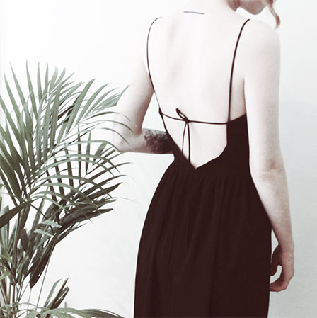
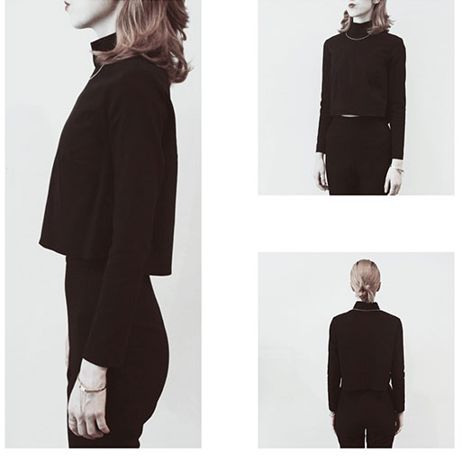

Esra Kurtcu was born in 1986 .She is a Turkish designer based in Istanbul and studied Textile and Fashion Design Department at Mimar Sinan Fine Arts University.In 2012, she received 2nd place in 20th IHKIB Koza Young Designers Contest with her collection titled ‘PERSONA' .
Mimar Sinan Fine Arts University in the 2013-14 Autumn-Winter Collection of Women Clothes which were prepared under the motivation of Samuel Beckett's play named Quad.
Monochrom is the smallest international company in Turkey. Monochrom belongs to Esra kurtcu, who has a designer. The customer is at the heart of our unique business model, which includes design, production, distribution and sales through our extensive retail network.
After her graduated she opened this boutique in Istanbul, 2012. Our vision is, therefore, to use our size and scale to lead the change towards circular and renewable fashion. Our size, scale and influence mean we have both a responsibility to do the right thing and an opportunity to create real lasting change.